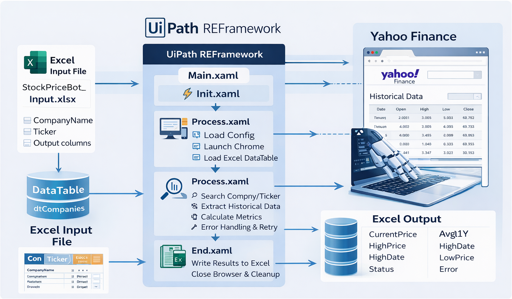

← Back to Projects
UiPath REFramework – Yahoo Finance Annual Metrics
Project Description
This automation solution uses the UiPath Robotic Enterprise Framework to extract stock data from Yahoo Finance and calculate annual financial metrics for NASDAQ listed companies.
The solution demonstrates a scalable enterprise automation architecture capable of processing large financial datasets with robust error handling and retry mechanisms.
High-level process steps
- Retrieve NASDAQ stock tickers
- Extract yearly financial data from Yahoo Finance
- Calculate performance metrics and indicators
- Store results in structured data format
Solution Diagram

Solution Demo
GitHub Repository
Source code and implementation details available on GitHub.
View Repository Tech Stack Used:
UiPath
REFramework
Yahoo Finance accessed via Chrome Browser
Data Processing
Excel